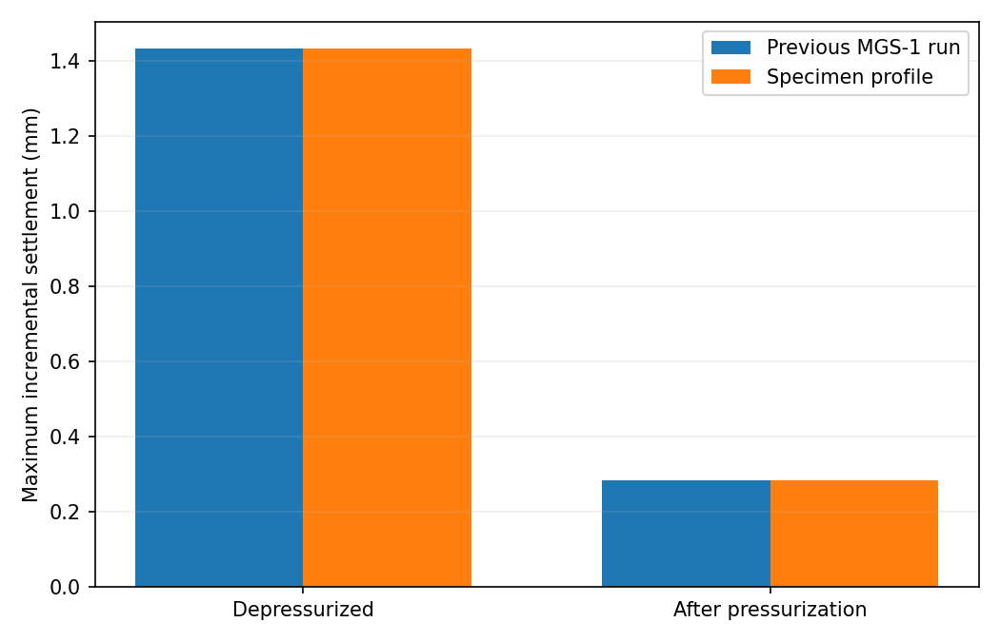
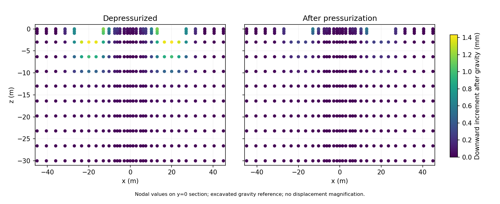

2026-11-24 · 90×90×30m · 절점4093개 / bbarBrick3504개 · 3m 매입 링 · 바닥판 폭14m
완료된 기존 MGS-1 해석도 같은 재료 법칙을 사용했습니다. 새 시편 레코드를 직접 연결했고 실제 변경 물성은 경화층 밀도1200→1025kg/m³입니다. 모래층의 MGS-1 DP 강도는 보정 전 값이며 하부 조립질층·암반층은 탄성입니다. 큰 재료모델 변경으로 설명하지 않습니다.
감압 상태 3D 침하 보기 · 내압 적용 후 3D 침하 보기 · 새 재료 배치 보기
감압은 내압 없이150.3MN을 재하한 상태입니다. 이후 내압 등가 들림120.72MN을 적용하면 순압축력29.58MN이 남습니다. 두 값 모두 각 모델의 자중 평형 이후 증분 침하입니다. 내압 적용 후 값은 무하중 잔류침하가 아닙니다.

| 상태 | 항목 | 기존 mm | 추천 시편 mm | 차이 mm | 변화 % |
|---|---|---|---|---|---|
| depressurized | average_mm | 1.22159498 | 1.22159887 | 3.89601955e-06 | 0.000318928911 |
| depressurized | maximum_mm | 1.43375799 | 1.43376002 | 2.02914849e-06 | 0.000141526569 |
| pressurized | average_mm | 0.241109391 | 0.241113611 | 4.21970847e-06 | 0.00175012199 |
| pressurized | maximum_mm | 0.28270052 | 0.282702708 | 2.18860886e-06 | 0.000774179284 |

| 변경 항목 | 기존 | 변경 | 변화 % |
|---|---|---|---|
| density_kg_m3 | 1200 | 1025 | -14.5833333 |
전체 지반 질량 변화 -222,625.761kg (-0.041042%). 경화층의 강성·강도는 같고 자중이 달라진 비교입니다. 재료 이름만 새 시편으로 바뀐 항목은 material_changes.csv의 changed=false로 구분했습니다.
| 단계 | 최종 하중계수 | 시도 횟수 | 힘 평형 상대오차 % | 수직 잔차 N |
|---|---|---|---|---|
| gravity | 1 | 20 | 2.2513142e-13 | 4.529953e-06 |
| depressurized | 1 | 8 | 3.74866938e-13 | 8.10623169e-06 |
| pressurized | 1 | 8 | 2.21870007e-13 | 4.529953e-06 |
해석·결과 저장 시간 334.0초. 단계별하중계수1.0과 힘 평형을 확인했습니다. 기존 결과의 실행시간과 차이를 재료 자체의 계산비용으로 단정하지 않습니다.
DP 상태벡터의 소성변형률 텐서 노름을 모든 적분점에서 기록했습니다. 10⁻⁸ 초과를 진단용으로 표시했으며 손상·붕괴 판정기준은 아닙니다. 자중 단계의 소성과 추가 재하에 따른 노름 변화를 구분했습니다. 탄성층에서 DP 상태가 비어 있는 것은 재료 법칙에 따른 것입니다.
| 단계 | 재료 | 최대 평균압축 kPa | 최대 q kPa | 소성 노름>10⁻⁸ 적분점 | 최대 소성 노름 | 자중 후 노름 변화 적분점 | 자중 후 최대 노름 변화 |
|---|---|---|---|---|---|---|---|
| gravity | mars_recommended_duricrust_dp_20261124 | 0.25781266 | 2.01301932 | 0 | 0 | 해당 없음 | 해당 없음 |
| gravity | mars_recommended_sand_mgs1_dp_1300_20261124 | 4.95498908 | 7.70140026 | 1400 | 0.000295421456 | 해당 없음 | 해당 없음 |
| gravity | mars_recommended_blocky_ejecta_elastic_20261124 | 36.3360632 | 46.0666062 | 해당 없음 | 해당 없음 | 해당 없음 | 해당 없음 |
| gravity | mars_recommended_fractured_basalt_elastic_20261124 | 138.392879 | 143.152783 | 해당 없음 | 해당 없음 | 해당 없음 | 해당 없음 |
| depressurized | mars_recommended_duricrust_dp_20261124 | 0.229217578 | 3.0107662 | 0 | 0 | 0 | 0 |
| depressurized | mars_recommended_sand_mgs1_dp_1300_20261124 | 4.93451855 | 7.56206683 | 4204 | 0.000506788322 | 4204 | 0.000253595466 |
| depressurized | mars_recommended_blocky_ejecta_elastic_20261124 | 66.8682132 | 94.7247286 | 해당 없음 | 해당 없음 | 해당 없음 | 해당 없음 |
| depressurized | mars_recommended_fractured_basalt_elastic_20261124 | 159.169209 | 168.117545 | 해당 없음 | 해당 없음 | 해당 없음 | 해당 없음 |
| pressurized | mars_recommended_duricrust_dp_20261124 | 0.235463056 | 2.79920865 | 0 | 0 | 0 | 0 |
| pressurized | mars_recommended_sand_mgs1_dp_1300_20261124 | 5.34513878 | 8.26328517 | 4204 | 0.000506788322 | 4204 | 0.000253595466 |
| pressurized | mars_recommended_blocky_ejecta_elastic_20261124 | 37.7235066 | 47.869519 | 해당 없음 | 해당 없음 | 해당 없음 | 해당 없음 |
| pressurized | mars_recommended_fractured_basalt_elastic_20261124 | 139.542432 | 144.093654 | 해당 없음 | 해당 없음 | 해당 없음 | 해당 없음 |
현재 해석은 굴착된 지반에 등가 수직 분포하중을 가하는 침하 비교입니다. 기초–지반 접촉·들림·미끄럼, 구조물의 강성에 따른 반력 재분배와 극한지지력은 검증하지 않았습니다. 이전 시편에서 확인한 문헌 강도포락선 차이도 남아 있습니다.
침하 비교 CSV · 전체 물성 대조 CSV · 층별 상태 CSV · 평형 CSV · 종합 JSON · 해석 원본 JSON
cd /Users/sydney/Desktop/capstone/Capstone_structure env MPLCONFIGDIR=/private/tmp/capstone_specimen_mpl OPENBLAS_NUM_THREADS=1 OMP_NUM_THREADS=1 \ /Users/sydney/anaconda3/envs/cap/bin/python ground/ground_modeling/ground_dome_footing.py \ --material-profile recommended_20261124 --html --output-dir /private/tmp/ground_recommended_fresh # 기존 재료 설정은 --material-profile reference로 선택 가능 # 예전 MGS-1 비교 설정: --material-profile reference --sandy-regolith-candidate mgs1
기존 완료 해석·저장된 MGS-1/MGS-1S 재료 파일은 변경하지 않았습니다. 현재 주 실행 코드의 기본 프로파일은 recommended_20261124입니다.